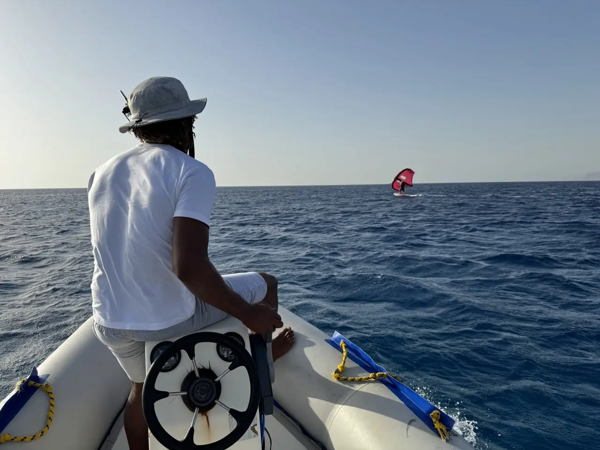
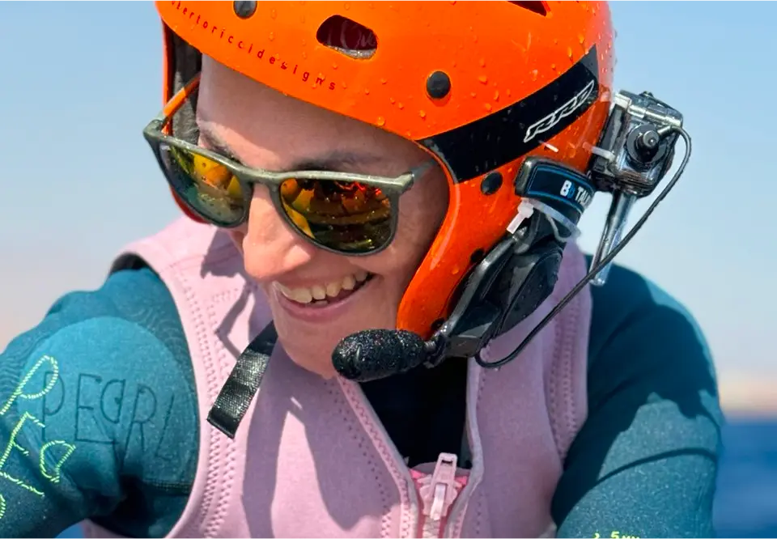
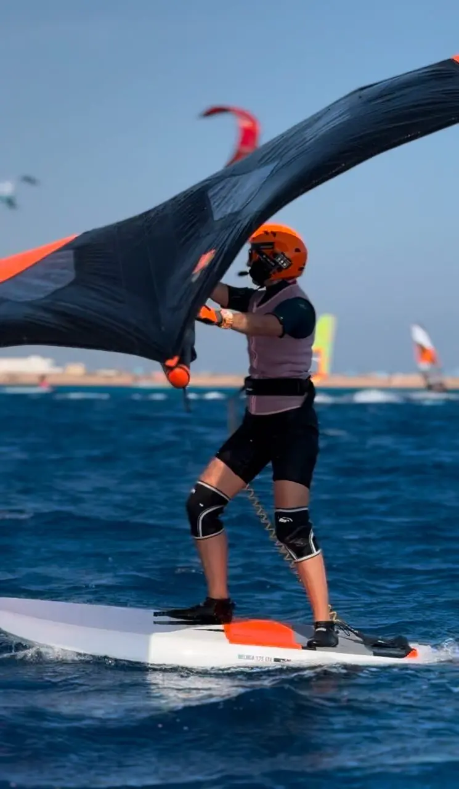
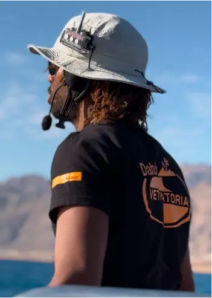
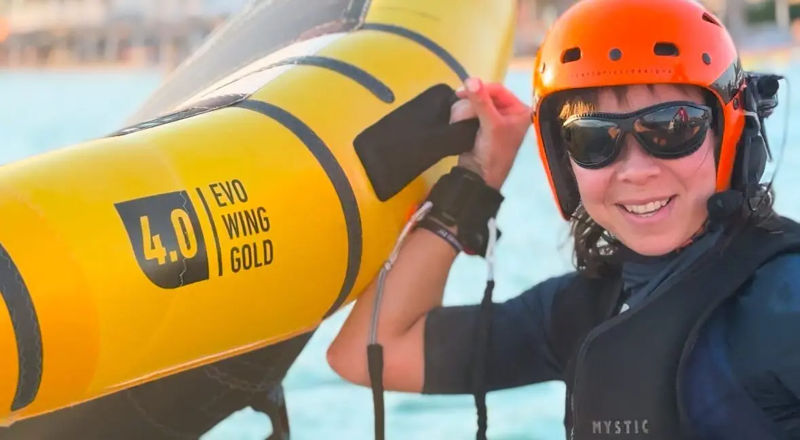

Вингфойл — уникальный водный спорт, отличающийся от других ощущением = абсолютного полета. Высота такого «полета» в нашем центре не превысит 85 см – размера мачты гидрофойла. Этот захватывающий процесс начинается с того, что доска поднимается над водой и словно парит над ней. Именно в этот момент, когда доска «отлипает» и поднимается, создается чувство невесомости и полета — эмоция, которую сложно описать словами. Но в тоже время многие ученики могут испытывать волнение, при котором совершаются 100% ошибок и потеря контроля, а значит, ученик либо падает в воду, либо доска приводняется и нужно снова выводить её на фойл.
Справиться с волнением и избежать ошибок в критический момент – задача инструктора. Именно здесь рации BB Talkin' становятся незаменимым инструментом.

Четкая связь — ключ к успеху
Шум ветра, воды и расстояние между учеником и инструктором часто мешают полноценному общению. С использованием раций BB Talkin' эта проблема решается. Гарнитура с наушником обеспечивает отличную слышимость даже в самых ветреных условиях.
Это дает возможность инструкторам в реальном времени корректировать ошибки ученика, объяснять технику и подсказывать нужные действия.
Фокус только на контроль доски и винга. Не нужно поворачиваться и пытаться расслышать инструктора
Подсказки в нужный момент
Важно понимать, что в основу вингфойла заложены контроль баланса на доске (дави на нос, дави назад) и контроль тяги винга (ветра). Научиться удерживать баланс на доске — одна из самых сложных задач для начинающего вингфойлера. Здесь важна не только теория, но и мгновенная реакция на советы инструктора. Когда инструктор может своевременно дать указания через рацию, ученик лучше понимает, как реагировать на порывы ветра, и контролировать свою стойку. Такая обратная связь минимизирует риск ошибок и позволяет быстрее прогрессировать.
Мгновенная советы - не теряем время и не теряем баланс! Время урока проходит максимально эффективно.




Двусторонняя связь как основа эффективного обучения
Рации BB Talkin' обеспечивают не только одностороннюю передачу инструкций, но и возможность ученику задавать вопросы. Это особенно важно для тех, кто только осваивает вингфойл: когда возникают сомнения или непонимание, можно сразу получить разъяснения. Инструктор, в свою очередь, не только наблюдает за учеником визуально, но и понимает его эмоциональное состояние. Такой формат коммуникации делает уроки более персонализированными и эффективными.
Психологическая поддержка
Вингфойл — это спорт, который требует концентрации, но также может вызывать страх или неуверенность, особенно на первых этапах. Голос инструктора, который поддерживает и успокаивает, помогает расслабиться, а расслабление — один из ключевых факторов успешного обучения. Если ученик чувствует себя уверенно и спокойно, он быстрее осваивает технику.

Рации BB Talkin' — это не просто средство связи, а инструмент, который значительно улучшает качество обучения вингфойлу. Они обеспечивают четкую слышимость, своевременную обратную связь и психологическую поддержку, что делает уроки максимально комфортными и результативными. Независимо от уровня подготовки, использование такой технологии помогает быстрее освоить технику и получить максимум удовольствия от процесса.
Если вы хотите ощутить истинную свободу и полет на воде, не забудьте позаботиться о качественной связи с вашим инструктором. BB Talkin' — ваш надежный помощник в мире вингфойла!